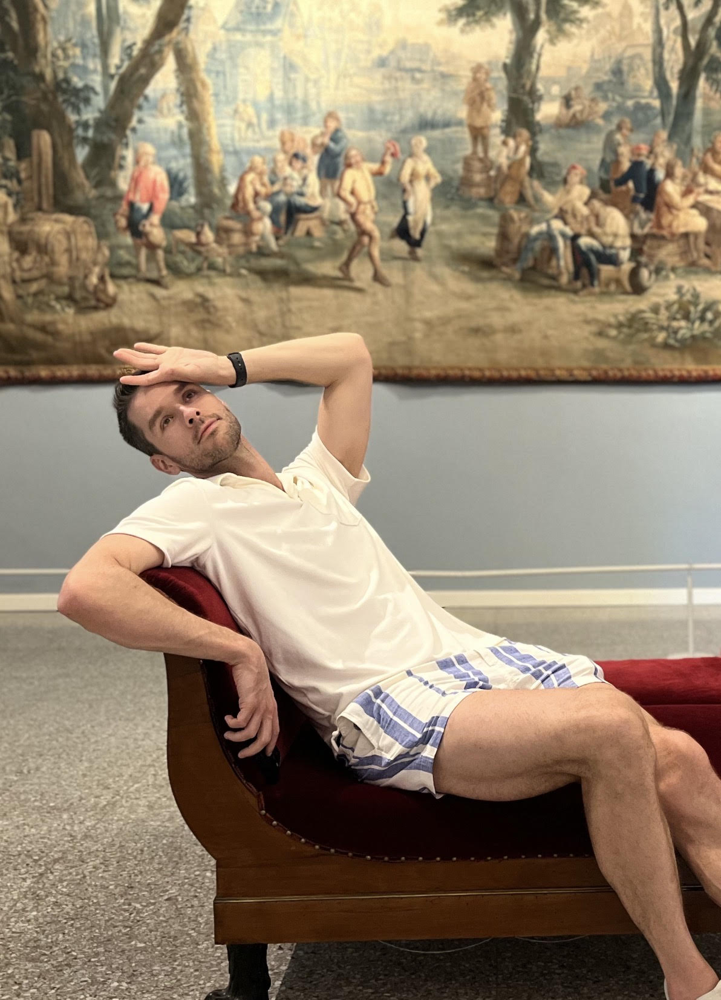
David
- 📷 @dvlavieri
- 🏙️ New York City
- ♌️ Leo
Villa Pezze, Carovigno
Attendees

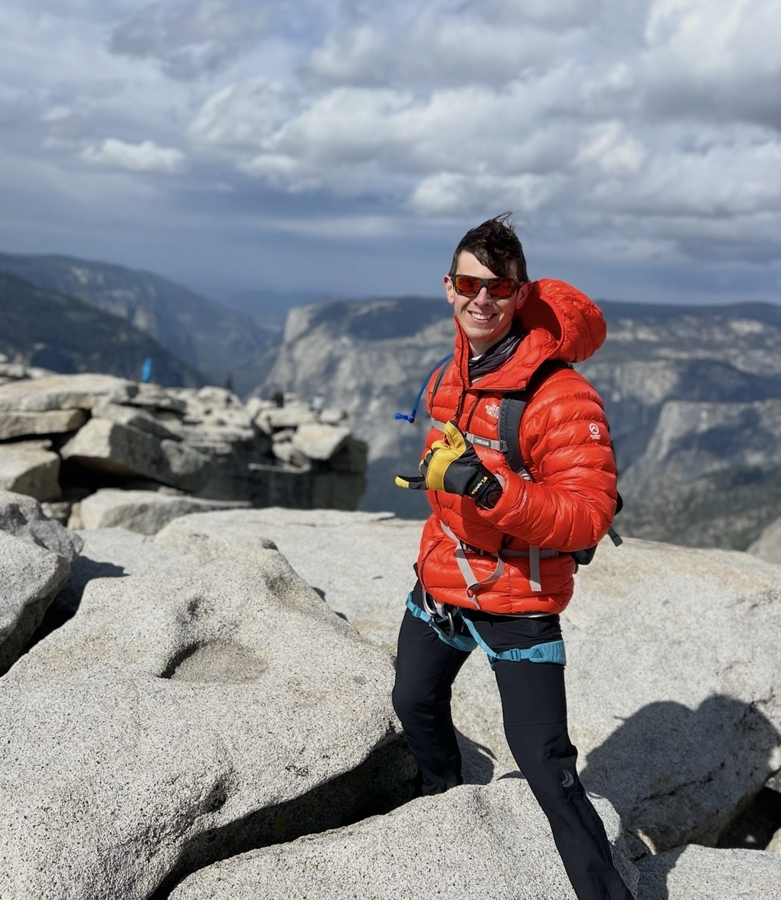
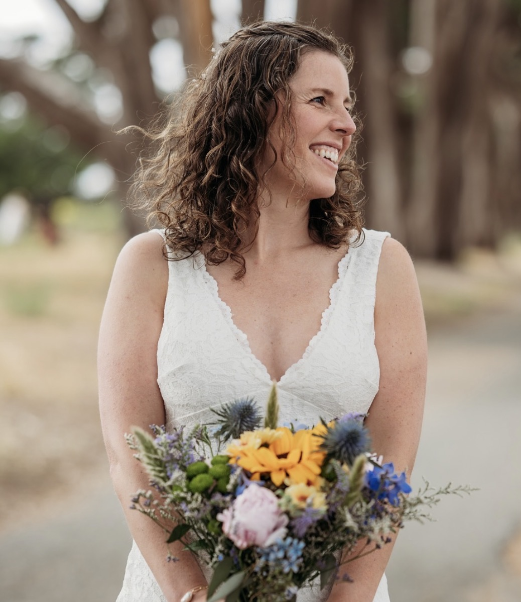
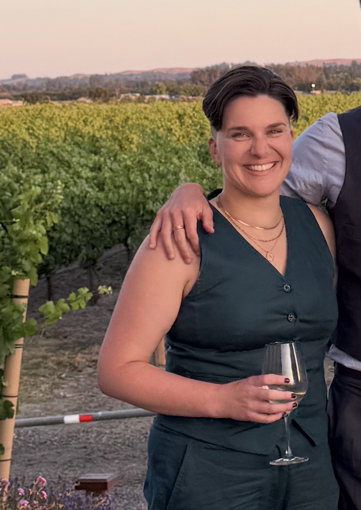
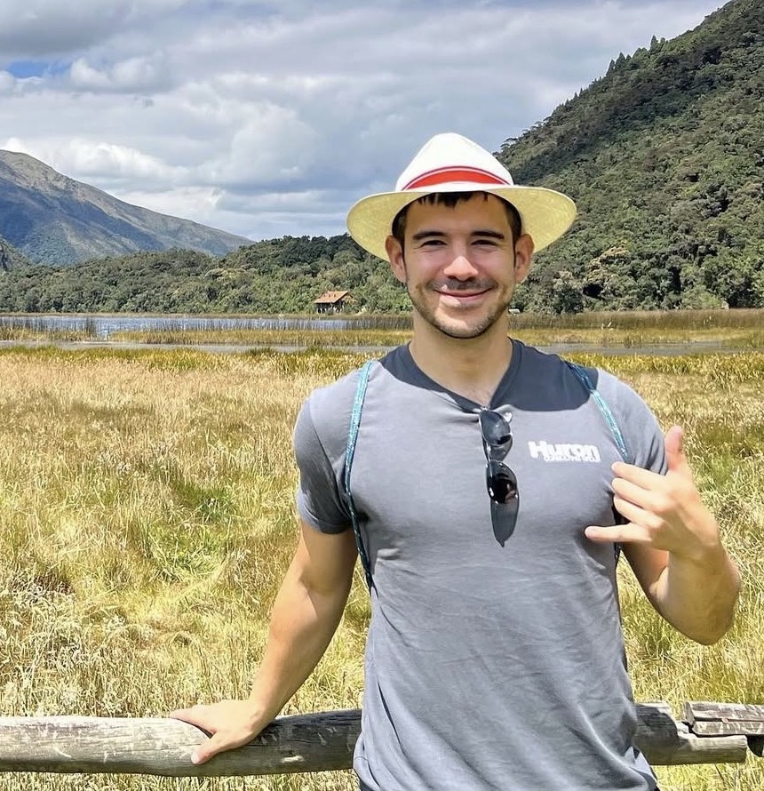
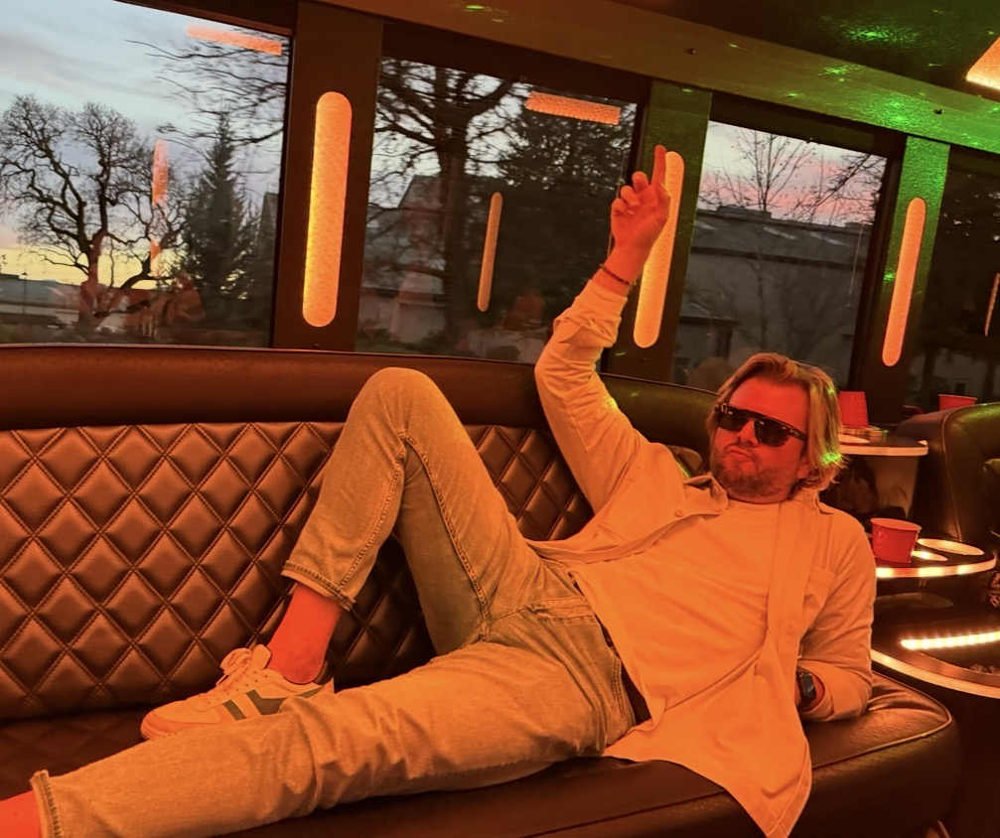
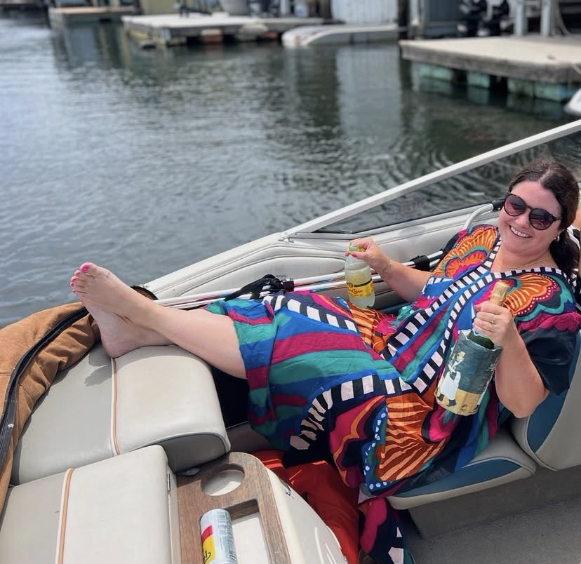
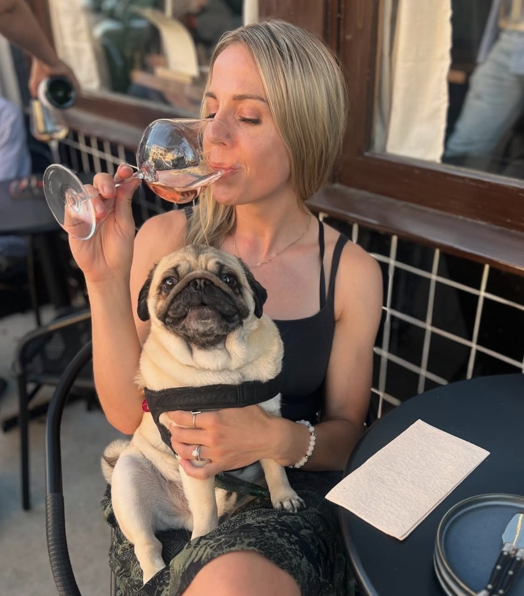
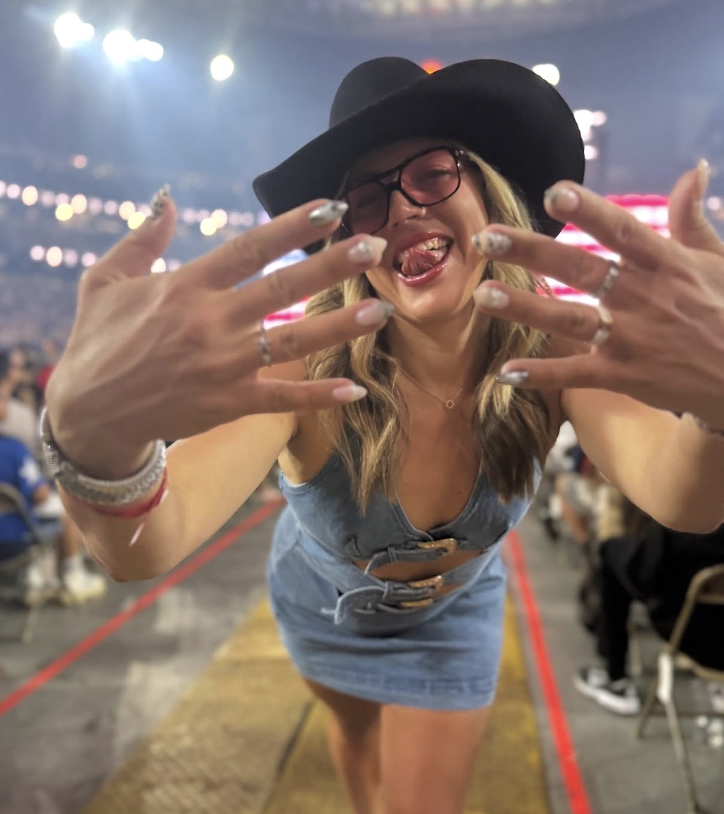
Accommodations


Villa details and photos are sourced from Oliver's Travels.
Logistics
Best for: the simplest arrival.
Best for: slower, scenic travel — turn the journey into part of the trip.
Book at trenitalia.com or italotreno.com. Tickets release ~120 days ahead; the cheapest fares sell out first.
Salento beaches


A wild crescent of light sand and turquoise water inside the protected Alimini Lakes oasis, reached by a 10–15 minute walk through pine forest from paid lots (~€4–8/day). Few services, so pack water and food — then pair it with an evening in Otranto's old town.


The postcard of northern Puglia: a white pebble beach beneath chalk cliffs and twin faraglioni sea stacks, inside the Gargano National Park near Mattinata. Beach access is largely reserved for the clifftop resort, so day visitors usually come by boat from Mattinata or Vieste. A long haul from the villa — plan it as a full road-trip day or an overnight.

.jpg?width=900)

A wide arc of golden sand between pine-topped cliffs, famous for the Due Sorelle ("Two Sisters") sea stacks at its southern end. Plenty of lidos plus a free central stretch, with bars and restaurants right behind the beach — the easiest big-group day on the Adriatic side, and the shortest drive on this list.


.JPG?width=900)
Just north of Punta Prosciutto and noticeably quieter — a wilder stretch of the same coast beside the Salina dei Monaci salt pan, where flamingos wade in summer. The smart fallback if the headline beaches are overrun.
.jpg?width=900)
.jpg?width=900)

A rocky cove in a regional natural park, a 15–20 minute pine-forest hike from the road. Deep, glass-clear water chilled by freshwater springs — the best snorkeling in Salento. No lidos, bring water shoes. A half-day adventure for the fit subset, not a full-group base.
.jpg?width=900)
.jpg?width=900)

Salento's famous sinkhole pool at Roca Vecchia — but swimming is now banned and the steps are gated for archaeological restoration (€3 ticket, May–Sept, no umbrellas or chairs). Treat it as a 30-minute photo and history stop on an Adriatic-coast day.
What actually matters for a group of 10 in the last week of July.
Hill towns & cities
Where to wander and, more importantly, where to eat. Restaurant picks are fact-checked against the live 2026 Michelin guide and current reviews. Drive times are from the villa — and every sit-down dinner for 10 in late July needs a reservation.


The White City glows at golden hour — go after 5 p.m., when the cruise-bus crowds thin and parking stops being a battle (the old town is residents-only; use the peripheral paid lots). Deepest restaurant bench in the area, with five Michelin-selected spots: book Casa San Giacomo or Bib Gourmand Osteria Piazzetta Cattedrale for dinner, Trattoria Fave e Fogghje for lunch, and Borgo Antico Bistrot for sunset aperitivo.


Our own town is quietly serious about food: Dissapore di Andrea Catalano earned a Michelin star in the 2026 guide (closed Mondays — book far ahead for 10), with Già Sotto l'Arco and Osteria Casale Ferrovia (an Apulian osteria in a restored olive-oil mill by the train station) also Michelin-selected. Wander up to Castello Dentice di Frasso, then join the evening passeggiata — few international tourists make it here.


Puglia's most visited town: ~1,500 UNESCO-listed trulli. Arrive before 9 a.m. — the tour buses land after 10 — and cross from the souvenir-shop side (Rione Monti) to the quieter Aia Piccola district, where some 590 trulli are still lived in. Casa Nova, in the vaulted cellar of a 1700s olive-oil mill, is the verified lunch pick.


The Valle d'Itria's official food capital. The anchor is Cibus — a Bib Gourmand trattoria in a 15th-century convent with its own cheese-aging caves (closed Tuesdays; essential to book for 10). Back it up with Osteria Pugliese's huge-value antipasti, Da Gino's thirteen-dish foraged-vegetable antipasto, and Forno San Lorenzo for the Slow Food–listed biscotto cegliese.


.jpg?width=900)
Puglia's capital of fornelli pronti — about a dozen butcher shops in the old town that grill what you pick at the counter, with bombette (stuffed pork rolls) the signature. Al Vecchio Fornello does breaded, grana-pesto, spicy, and sun-dried-tomato-and-caciocavallo varieties, priced by the 100 g. Go in the evening and reserve — the little center fills fast in July.


A perfect circle of whitewashed lanes on a Valle d'Itria hilltop, ranked among Italy's most beautiful villages. Touristy by day but lovely in the evening: balcony views over the trulli-dotted valley with a glass of the town's own crisp white wine. Pairs naturally with Martina Franca and Alberobello — all three sit within ten kilometers of each other.
_(2664451342).jpg?width=900)


The Valle d'Itria's elegant one: baroque palazzi, the Palazzo Ducale, the Basilica di San Martino, and capocollo — the town's celebrated cured pork. The dining headline is Bros', the famed creative restaurant that relocated here from Lecce in 2025, with its Bib Gourmand sibling Bros' Trattoria as the more bookable (and more affordable) table for a group.


The cliff-top town above the Lama Monachile cove — spectacular and, in July, mobbed; parking is stressful enough that the train is the smarter play. Built for a 2–3 hour visit around food: Pescaria's famous seafood panini (go before 12:30 or after 2:30 to dodge the queue), then Il Super Mago del Gelo (est. 1935) for the original caffè speciale — espresso, cream, amaretto, lemon peel — or gelato at Gusto Caruso.
Week at a glance
The shared plan for the villa week — check-in Monday, check-out Saturday. Most days stay open for the beach, the pool, and town runs; the one fixed booking so far is a wine tasting at Masseria Altemura.
Settle in, claim rooms, and ease into the week with a first dinner at the villa.
Kick off the week on the terrace with a flight of spritzes. Recipes below — mix your own, or take requests.
Build over ice in a big wine glass, stir once, drop in the orange.
Gently press the mint with lime, add ice, pour, and stir.
Build over plenty of ice, stir, and garnish with lemon and mint.
Pour the Lambrusco over ice, top with soda, and add the fruit.
Pour over ice, squeeze the lime, and accept no judgment.
Fire up the outdoor pizza oven and build your own — dough, sauce, and toppings out on the terrace.
Open day — beach, pool, and settling in. Town night to be decided.
A guided tour-and-tasting at a 17th-century Salento wine estate in the Primitivo di Manduria DOC.
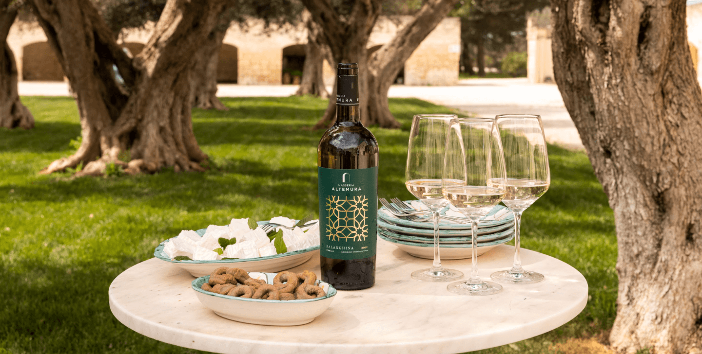
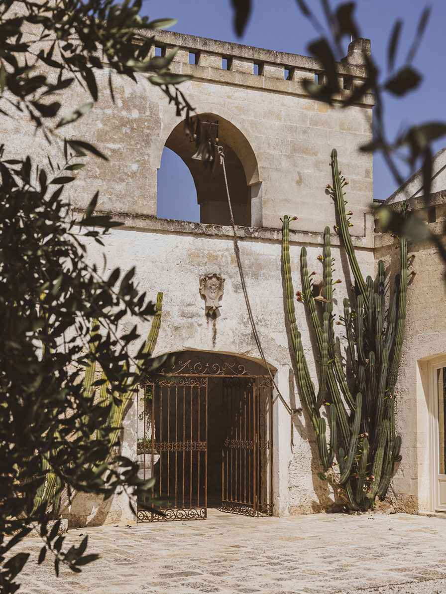
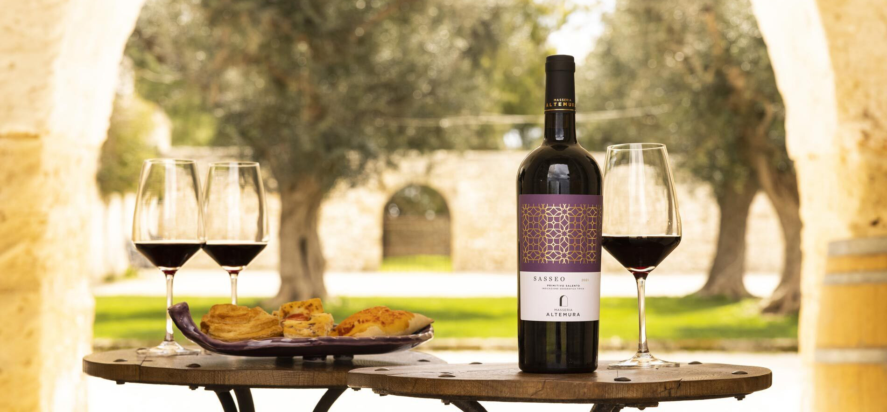
Salento · Primitivo di Manduria DOC · the Zonin family
A 17th-century farmstead embraced by the light of Salento and the breezes of two seas. The tour winds through the vineyards, the old farmhouse, and the winery, finishing in tasting rooms with original cross-vaulted ceilings dating to 1676. Tastings pair the estate's symbolic wines — Primitivo, Negroamaro, Fiano, and Aglianico — with typical Apulian food. We're booked for the Lunch & Six Wines experience.
The big night — celebration dinner at the villa or a starred table nearby. Details to come.
Open day — Valle d'Itria loop or a Salento beach. Dinner reservation to be decided.
Pack up, final coffee on the terrace, and onward travel.